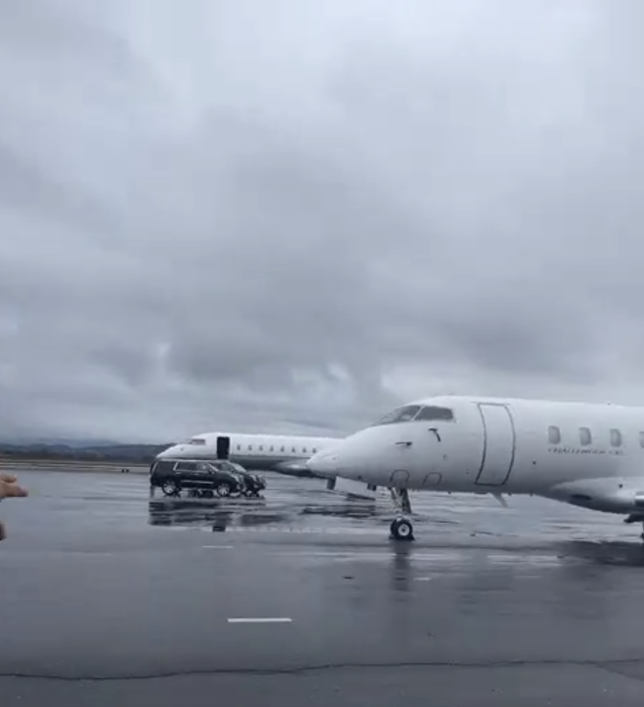
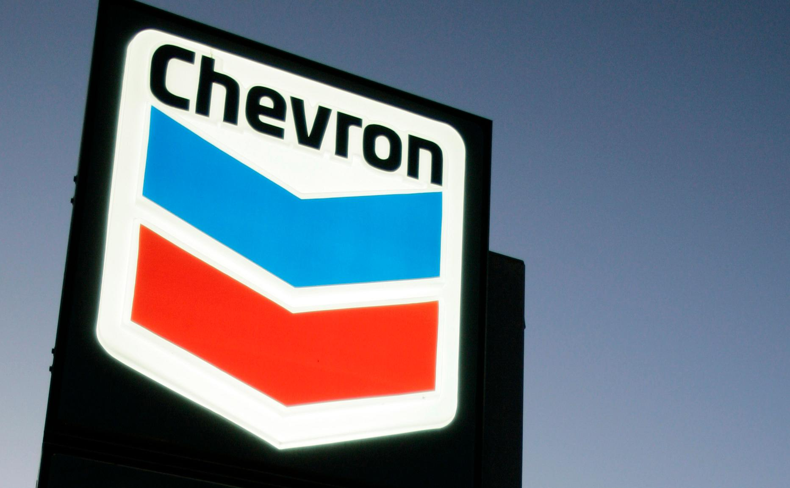

Work Experience!
Hello. The following is a collection of my work experience throughout my three years in the Engineering Academy. This page includes information about field trips, the mentorship program, guest speakers as well as computer science related extracurriculars.
Kode with Klossy
(Summer 2019 - Summer 2020)
For the past two summers, I have been spending two weeks at the all girls code camp, Kode with Klossy in San Fransisco (and virtually this year) with my fellow classmates and instructors. In 2019, I was exposed to new code languages for website design. I learned how to code in HTML, CSS and Javascript. At the end of the two weeks, we were each assigned projects to complete and present to the whole class. I met so many amazing girls and my instructors were always patient and understanding. Not only did I learn about different coding languages, but I also learned about the culture of tech itself. I am thankful for the opportunity to discover my passions for code as well as make lasting connections. During those two weeks, we had many guest speakers come in and talk to us about their experiences in technology as females. After the camp, I feel more confident about my skills in computer science and so excited to learn more.
In 2020, I learned to program in Swift for the Mobile App development camp. Due to the virtual nature of the camp, we had the opportunity to attend webinars hosted by famed individuals like Reese Witherspoon and Ashton Kutcher. At the end of just the two weeks, I created an app called Deer Diary, which is dedicated to making planning for individuals more efficient and manageable. Through virtual Kode with Klossy, I had the opportunity to meet scholars from all around the world, not just in the Bay Area, and create lasting connections.


Field Trips
(2018 - Present)
In 2018, I had the incredible opportunity to visit the Cal Maritime Academy and the Sun Power headquarters. While exploring the university, I especially resonated with the Cal Maritime campus. Personally, I would rather attend a college that provides a wide range of opportunities to explore your career and focus on hands-on experiences. I really enjoyed talking with our tour guide, Anna, who showed us around the campus as well as the Golden Bear ship. While I don't want to go into marine engineering, I am very grateful for the chance to open my eyes to new possibilities. I also really enjoyed the visit to the Sun Power headquarters. Having been to many different company headquarters, it's always interesting to acknowledge some of the similarities and differences. What I liked most about the work environment is their focus on environmentally friendly resources, since they are a solar power based company. Being a founder of the Eco club at Dublin High School, it's always inspirational seeing steps taken in protecting the environment. One of the employees I talked to emphasized how much it didn't feel like "work" but rather doing what you loved. Her work environment encouraged productivity and she was rarely stressed on the job. This is inspiring to hear because I would like for my college experience to reflect the same level of productivity and minimal stress.In addition to visiting these campuses, I also had the opportunity to visit the Patriot Jet Team Foundation, where we learned about airplane design and the role of physics.
I am so lucky to be a part of the Engineering Academy at my school because I have so many opportunities to get exposure to the possibilities after high school. In my junior year, I visited San Jose State University as well as Santa Clara University on a field trip. Both campuses were unique and fun in their own way. At San Jose State University, our tour guide was Malachi and he told interesting and compelling stories about the history of the school. It really resonated with me how much the school is shaped by its own culture. He explained to us the significance of many of the school’s monuments, such as the Cesar Chavez Memorial Arch and the Olympic Black Power Statue. At Santa Clara University, our tour guide was named Brianna and she focused her tour on civil and computer engineering. This was especially interesting to me because I am interested in this career path. During her tour, she emphasized the importance of collaboration in college and she also explained how a typical schedule for a student in this pathway would look.
This year, I attended by field trips virtually over Zoom. These trips included a Salesforce Job Shadow, a Livermore Aviation Tour, and a Spluk Job Shadow. Out of the three, the Livermore Aviation Tour was definitely the most interesting and intruiging to me because the tour guides were so engaging and fun. They really brought a virtual experience to life. Throughout the tour, I learned about how to fly an airplane, what the daily life of a worker at Livermore Airport. I was also able to learn about the process of preparing an airplane for flight. Even though personally I don't want to go into aviation, I still found it incredibly fascinating to learn about.



Mentorship Program
(2019 - 2020)
Through the Dublin High School Engineering Academy and its Mentorship Program, I had the opportunity to meet so many inspiring mentors from the workforce, as well as connect with my mentor; Amril D'Souza. Ms.D'Souza is an electrical engineer at Sandia National Laboratories. My mentor and I actually have a lot in common, for example, we both prioritize our families and we both like to sing! The most helpful part about having a mentor is the preparation and feedback we get for interviews. For our November meeting, my mentor conducted a mock interview. It was really insightful recieving advice from someone with more experience in the workforce. Additionally, my mentor also followed up with an email which included multiple resources to improve interview skills. Overall, this was an incredible experience to have in my junior year of high school and it definitely makes me feel a lot more prepared for the future.

Guest Speakers
(2018 - Present)
In 2019 in my Principles of Engineering class, we had a guest speaker, Mr. Salloum, who talked about his transition from biomedical engineering to data analysis. My personal takeaway from his presentation would be how to apply transferable skills to multiple fields in engineering, regardless of how related they are. His speech emphasized how you shouldn't be afraid to try new things and that you are definitely not going to be stuck at the same type of job as your major if you are willing to explore. I found his story really motivational and encouraging. He talked about his background in finding different cures for cancer, such as magnetic nano particle hyperthermia. which is a method that is minimally invasive and produces less side affects than other treatment methods.
In 2020 in my Computer Science Principles class, we had a guest speaker from Chevron named Aileen Iniguez who talked about her journey into becoming an Analytics Analyst and Data Scientist. She started her path by participating in programs such as Project Lead the Way and Techbridge Girls in high school and soon discovered data science after college. She introduced us to the foundations of data science, including extracting data and cleaning it, which is also known as data wrangling. One key takeaway from her speech was that hard work and perseverance can take someone really far in life. Ms. Iniguez’s story demonstrates how her many different interests and passions led her through her journey into data science at Chevron even though it may not have been her original end goal.
